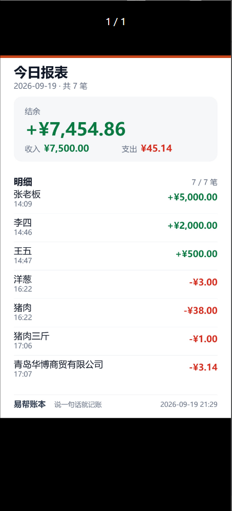
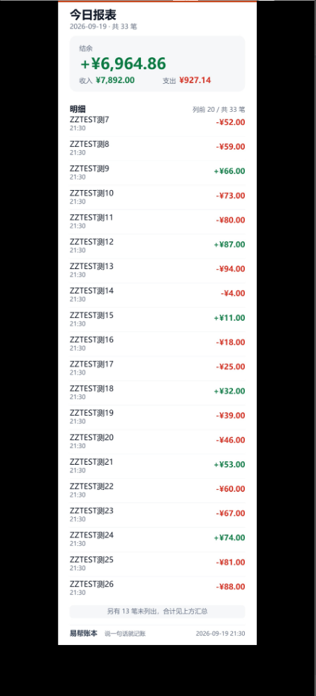
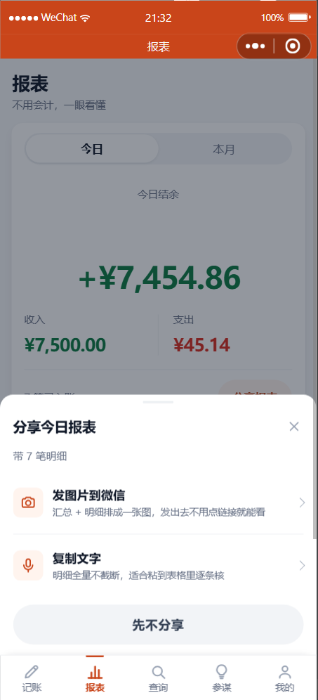

📊 易帮账本 · 2026-09-19 💰 收入：¥7,500.00 💸 支出：¥45.14 📈 结余：+¥7,454.86（7 笔） 智能记账，越记越明白
/share/create），
但前端一次都没调用过 —— 而且你说过 H5 先不做，所以链接方案这一版不启用
（没渲染页时把链接露出去，对方点开只会看到一坨 JSON）。

今日报表图（7 笔）
明细多的时候（33 笔）
分享面板| 图片 | 文字 | |
|---|---|---|
| 微信里的体验 | 最顺（不用点链接，聊天里直接看） | 要粘贴 |
| 内容容量 | 有上限（长图在微信里预览很差） | 全量不截断 |
| 适合 | 看一眼 | 逐条核 / 粘进表格 |
report-image rows=7 h=1176（修之前是 1228），且没有 report-layout-drift。
2026-13-99 能过
^\d{4}-\d{2}-\d{2}$ 这个正则，但一路传到数据库的日期比较就报错，
整个接口返回 500 —— 一个参数写错，请求被打死，用户看到"服务出错"，跟他的操作毫无关系。
2 月 30 日会被悄悄滚到 3 月，回读就不相等了）。
顺手给列表接口的 size 也封了顶 —— 原来 ?size=999999 能把整张表拉出来。
0，但明细明明有 7 行 ——
文字版里写成「结余 +¥7,454.86（0 笔）」。
| 项目 | 结果 |
|---|---|
| 区间查询 / size 上限 / 脏日期不再 500 / 多租户隔离 / 月度汇总 | 9 / 9 |
| 日期工具单测（含 2026-02-30、2026-13-99、闰年） | 8 / 8 |
今日报表图版式（高度自检 drift） | 0（完全吻合） |
| 今日 / 本月两条路径 | 都是 7 笔、范围与合计正确 |
| 明细截断分支（临时插 26 条数据测的） | rows=20 / hidden=13 / drift=0，dpr 自动降级 |
| 文字版 | 7 笔全量、时间正序 |
| 语音归类回归 / 分类统计回归 | 54 / 54 · 13 / 13（改过后端，确认采购线没被改坏） |
| 静态自检 / WXML 配对 / 指令 / 样式括号 / console | 全过，无报错 |